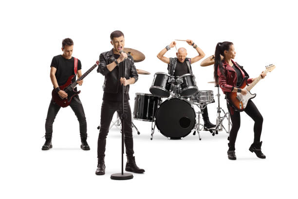

Bienvenido a la pagina oficial de
Bienvenido a la pagina oficial de
Pepe y los pepitos es una banda de rock alternativo formada en 2010. Con un sonido único que combina ritmos pegajosos con letras profundas, han conquistado el corazón de sus fans en todo el mundo.
Explora nuestra discografía, conoce a nuestros integrantes y disfruta de nuestra música y videos en la sección multimedia.
Haz click en la imagen para poder saber el nombre de nuestros integrantes
